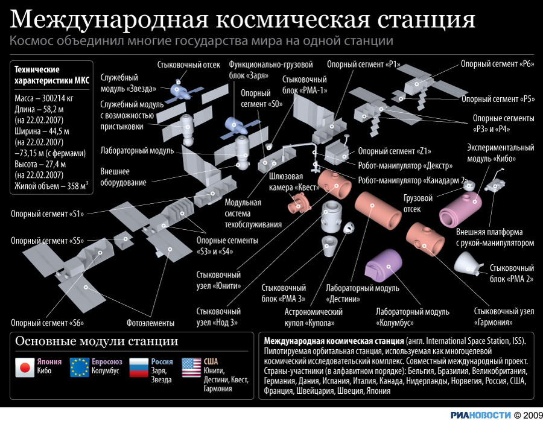
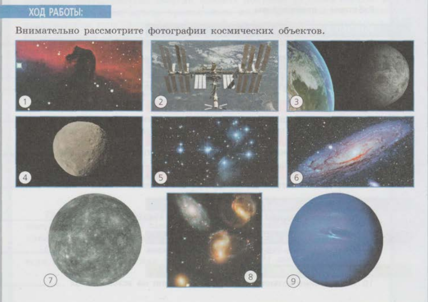
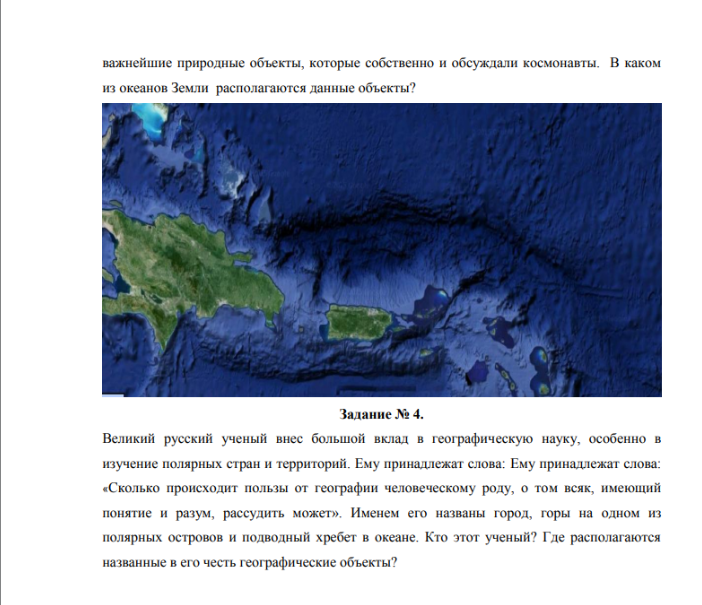

🎯 Цель работы
Формирование навыков познавательной деятельности, навыков разрешения проблем, возникающих при выполнении практических заданий по астрономии.
📚 Теоретические сведения
Международная космическая станция МКС - это воплощение самого грандиозного и прогрессивного технического достижения космического масштаба на нашей планете. Это огромная космическая научно-исследовательская лаборатория для изучения, проведения экспериментов, наблюдений как за поверхностью нашей планеты Земля, так и для астрономических наблюдений за дальним космосом без воздействия земной атмосферы. Одновременно это и дом для работающих на ней космонавтов и астронавтов, где они живут и работают, и порт для причаливания космических грузовых и транспортных кораблей.
Подняв голову и взглянув вверх на небо, человек видел бескрайние просторы космоса и всегда мечтал если не покорить, то как можно больше узнать о нем и постигнуть все его тайны. Полет первого космонавта на орбиту земли и запуск спутников дал мощный толчок в развитии космонавтики и дальнейшим полетам в космос. Но просто полета человека в ближний космос уже становится недостаточно. Взоры устремлены дальше, к другим планетам, и чтобы достичь этого, необходимо еще многое исследовать, узнать и понять. А самое главное для долгосрочных космических полетов человека - необходимость установить характер и последствия длительного влияния на здоровье долговременной невесомости при перелетах, возможность жизнеобеспечения длительного пребывания на космических кораблях и исключение всех отрицательных факторов, влияющих на здоровье и жизнь людей, как в ближнем, так и дальнем космическом пространстве, выявление опасных столкновений космических кораблей с другими космическими объектами и обеспечение мер безопасности. Основная конфигурация станции была утверждена и подписана в 1996 году. Она состояла из двух основных сегментов: Российского и Американского. Также принимают участие, располагают свое научное космическое оборудование и проводят исследования такие страны как Япония, Канада и страны Европейского космического союза.
28.01.1998г. в Вашингтоне было подписано окончательно соглашение о начале строительства новой долговременной, с модульной архитектурой, Международной космической станции, и уже 2 ноября этого же года Российским ракетоносителем был выведен на орбиту первый многофункциональный модуль МКС «Заря».
📋 Задания и инструкции по выполнению
Задание 1
Внимательно рассмотрите фотографии космических объектов:
- Определите, какие космические объекты изображены на снимках (тип и название).
- Систематизируйте объекты в порядке увеличения их размеров.
- Расположите объекты в порядке их удаленности от поверхности Земли: от самых больших до самых далеких.
- Запишите последовательность объектов, сортируя из по удаленности от поверхности Солнца.
- Перечислите не менее 7 объектов, которые изучает астрономия.
- Какие из перечисленных объектов вы могли бы наблюдать невооруженным глазом?
Задание 4
Используя электронный ресурс Астро-Азбука, выберете три модуля МКС в соответствии с вашим вариантом и опишите их основное назначение.
| Вариант 1 | Заря, Юнити, Звезда | Вариант 4 | Поиск, Купол, Рассвет |
|---|---|---|---|
| Вариант 2 | Юнити, Звезда, Судьба | Вариант 5 | Леонардо, Бим, Квест |
| Вариант 3 | Квест, Пирс, Гармония | Вариант 6 | Купол, Кибо, Звезда |
| Вариант 4 | Гармония, Колумбус, Кибо | Вариант 7 | Юнити, Причал, Рассвет |
Задание 2
Космонавты с борта Международной космической станции обратили внимание на два острова и огибающую их с севера в виде вытянутого шрама крупную форму донного рельефа. Обсуждая увиденное, они не смогли прийти к однозначному выводу о зафиксированных объектах. Используя карты географического атласа, помогите им определить по представленному фрагменту космоснимка запечатленные на нем важнейшие природные объекты, которые собственно и обсуждали космонавты. В каком из океанов Земли располагаются данные объекты?
Задание 3
Используя ресурсы сети Интернет, изучите структуру и содержание сайта «МКС он-лайн». Заполните таблицу:
| Особенности структуры сайта | Какая информация на сайте доступна в реальном времени? | Какую информацию сайта можно использовать при организации проектной и исследовательской деятельности? |
|---|---|---|
Задание 5
Используя ресурсы сети Интернет, найдите сайты современных астрономических исследовательских центров мира. Заполните таблицу: